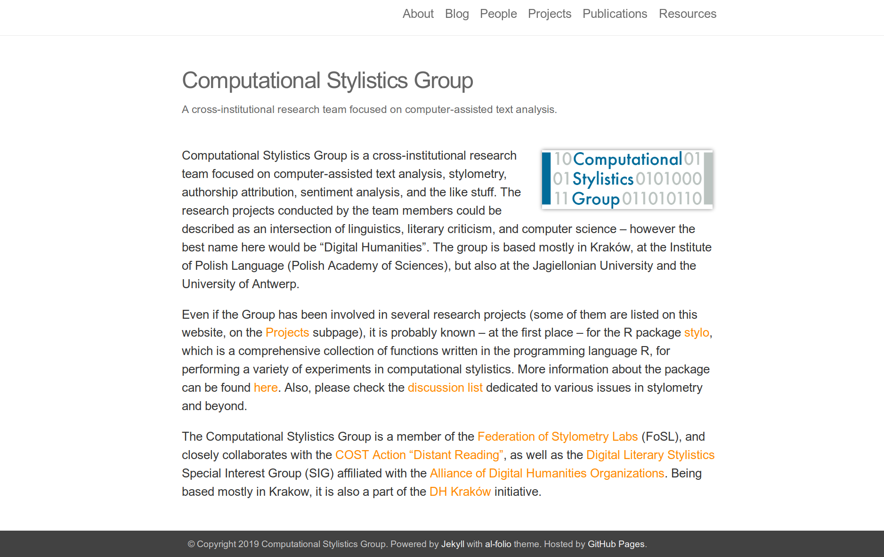

<!doctype html>
<html lang="en">
<head>
<meta charset="utf-8">
<!-- CUSTOMIZE THIS! -->
<title>TDM+R 2019</title>
<meta name="author" content="Christof Schöch">
<!-- END -->
<meta name="description" content="Slides">
<meta name="apple-mobile-web-app-capable" content="yes">
<meta name="apple-mobile-web-app-status-bar-style" content="black-translucent">
<meta name="viewport" content="width=device-width, initial-scale=1.0, maximum-scale=1.0, user-scalable=no, minimal-ui">
<link rel="stylesheet" href="css/reveal.css">
<link rel="stylesheet" href="css/theme/simple.css" id="theme">
<!-- Code syntax highlighting -->
<link rel="stylesheet" href="lib/css/zenburn.css">
<!-- Printing and PDF exports -->
<script>
var link = document.createElement( 'link' );
link.rel = 'stylesheet';
link.type = 'text/css';
link.href = window.location.search.match( /print-pdf/gi ) ? 'css/print/pdf.css' : 'css/print/paper.css';
document.getElementsByTagName( 'head' )[0].appendChild( link );
</script>
<!--[if lt IE 9]>
<script src="lib/js/html5shiv.js"></script>
<![endif]-->
</head>

<body>
<div class="reveal">
<div class="slides">
<section data-markdown="" data-separator="^\n---\n" data-separator-vertical="^\n--\n" data-charset="utf-8" data-background-image="img/basics/uni-trier-icon.png" data-background-size="50px" data-background-position="top 10px right 10px">
<script type="text/template">

<!-- THIS IS WHERE THE CONTENT GOES! -->
<!-- Any section element inside of this container is displayed as a slide -->

##Analysemethoden und Datenformate in den Computational Literary Studies
<br/>
<hr/>
<br/>
Christof Schöch (Trier)
<br/>
<br/>
**Workshop 'Strategien für die Nutzbarmachung urheberrechtlich geschützter Textbestände für die Forschung durch Dritte', 28. November 2019, Trier**
<br/>
<br/>
<hr/>
</img>


---
<br/>
<br/>
# 1. Einleitung

--
# Überblick
<br/>
1. [Einleitung](#/3)
1. [Existierende Datensätze / Formate](#/3)
2. [Analysemethoden der CLS](#/4)
3. [Fazit](#/5)

--
## Ausgangslage
<br/>
* Das "window of opportunity" für TDM in den CLS:<br/>1800-1923/1948(USA: Publ. / EU: Autor); damit:
    * Ausreichend große Mengen an gut digitalisierten Texten (Produktion, OCR)
    * Gemeinfrei für die Republikation von Datensätzen (Copyright)
    * Nur hier: Benchmark-Datensätze, Reproduzierbarkeit, SotA

--
## Leitfragen
<br/>
1. Welche Analysemethoden sind in den CLS weit verbreitet?
2. Können diese Methoden auf urheberrechtlich unbedenklichen, abgeleiteten Datenformaten angewendet werden?
3. Welche Datenformate sollten priorisiert werden? 


---
<br/>
<br/>
# 2. Existierende Datensätze / Formate

--
<a href="img/cangs.png"></a>
<p>CrossAsia N-Gram Service<br/>https://analytics.hathitrust.org/datasets</p>

--
<a href="img/cangs-txt.png"></a>
<p>CrossAsia N-Gram Service<br/>https://analytics.hathitrust.org/datasets</p>

--
<a href="img/csg.png"></a>
<p>Stylo for R Datasets<br/>https://github.com/computationalstylistics/stylo/tree/master/data</p>

--
<a href="img/lee-tdm.png"></a>
<p>Stylo for R Datasets<br/>https://github.com/computationalstylistics/stylo/tree/master/data</p>

--
<a href="img/htrc.png"></a>
<p>HathiTrust Extracted Features Dataset<br/>https://analytics.hathitrust.org/datasets</p>

--
<a href="img/htrc2.png"></a>&nbsp;&nbsp;<a href="img/htrc1.png"></a>
<p>HathiTrust Extracted Features Dataset<br/>https://analytics.hathitrust.org/datasets</p>


---
<br/>
<br/>
# Vorschlag für ein<br/>abgeleitetes Datenformat

--
## Eigenschaften
<br/>
* Datenstruktur 
    * Term-Dokument-Matrix oder (JSON-Datei)
    * 1 Text = 1 Datei
* Segmentierung 
    * kleinteilig, bspw. 100 / 500 Wörter
    * kleine Segmente => Sparseness, Dateigröße
* Merkmale 
    * Wortform, POS, Lemma: Häufigkeit pro Segment
    * Disambiguieren / Filtern / Aggregieren
* Rekonstruierbarkeit des Textes: eindeutig ausgeschlossen


--
## Beispiel: Michel Jeury, *Le Monde du Lignus*

<p>Ausschnitt aus einer Term-Dokument-Matrix</p>


--
## Mögliche Erweiterungen
<br/>
* Weitere Attribute eines Tokens, bspw.: "in direkter Rede"
* Analog auch für N-Gramme denkbar (aber: Sparseness)
* Auch als JSON-Datei implementierbar


--
## Dazu reichhaltige Metadaten
<br/>
* Jahr der Erstveröffentlichung
* Autor inkl. VIAF/GND (oder Attribute)
* Textlänge
* Vers oder Prosa
* Großgattung (narrativ, dramatisch, lyrisch)
* narrative Prosa: Erzählform, Dialoganteil


---
<br/>
<br/>
# Analysemethoden


--
## Analysemethoden im Überblick
<br/>
* Autorschaftsattribution
* Topic Modeling
* Distinktive Merkmale
* Text Reuse
* Netzwerkanalyse
* Word Embedding Models 
* Metaphernerkennung
* ...


---
<br/>
<br/>
# Autorschaftsattribution

--
## Autorschaftsattribution: Beispiel
<a href="img/ratineaud.png"></a>
<p>Pierre Ratinaud 2018, "The Brilliant Friend(s) of Elena Ferrante"</p>

--
## Autorschaftsattribution: How it works
<br/>
* Prinzip: Textähnlichkeit, d.h.: bag-of-words, Vektorraum, Distanzmaße
* Parameter: Segmentierung, Liste der Merkmale, (Distanzmaß)

--
## Autorschaftsattribution: Datenformat
<br/>
* Datenformat: Term-Dokument-Matrix
* Merkmale (einfachster Fall): Worthäufigkeiten pro Gesamtdokument (1-Gramme)
* Segmentierung: optional, aber nicht unüblich
* Wortliste: in Abhängigkeit der Häufigkeit im Korpus
* Fazit: mit vorgeschlagenem Format problemlos möglich


---
<br/>
<br/>
# Topic Modeling

--
## Topic Modeling: Beispiel
<a href="http://signsat40.signsjournal.org/topic-model/"></a>
<p>Mazzaschi et al. 2014, Signs@40</p>

--
## Topic Modeling: How it works
<br/>
* Umfangreiche Textbestände
* Probabilistische Identifikation von Wörtern, die immer wieder gemeinsam auftreten
* Topics ~ Themen, deren Verteilung untersucht wird (Autoren, Jahre, Gattungen)
* Parameter: Segmentierung, Wortliste, (Topic-Anzahl)


--
## Topic Modeling: Datenformat
<br/>
* Datenformat: Term-Dokument-Matrix
* Merkmale: binarisierte Häufigkeit; Lemmas nach POS gefiltert / Stopwords; kleine Textabschnitte
* Fazit: etwas mehr Preprocessing, dennoch problemlos


---
<br/>
<br/>
# Distinktive Merkmale


--
## Distinktive Merkmale: Beispiel
<a href="img/zetascores_comedie-tragedie_1000-lemmata-all.svg"></a>
<p>Distinktive Wörter in Komödien und Tragödien (Schöch 2017)</p>

--
## Distinktive Merkmale: How it works
<br/>
* Vielzahl von Verfahren, von einfach bis komplex
* Avancierte Verfahren: 
    * vergleichen den Grad der Dispersion
    * hierfür ist Segmentierung notwendig


--
## Anforderungen an das Datenformat
<br/>
* Wortformen, Lemmata oder POS
* POS-basierte Selektion
* binarisierte Segment-Häufigkeit
* Fazit: mit etwas Preprocessing möglich 

---
<br/>
<br/>
# Text Re-Use

--
## Text Re-Use: Beispiel
<a href="img/pvierth-reuse.jpg"></a>
<p>Text Re-Use zwischen zwei Chinesischen Romanen (Paul Vierthaler 2019)</p>

--
## Text Re-Use: How it works
<br/>
* Paarweiser Abgleich kleiner Textsegmente (4-6 Tokens)
* Fuzzy matching (bspw. mit Levenshtein-Distanz)
* bei Match wird die Alignierung expandiert

--
## Anforderungen an das Datenformat
<br/>
* Erster Schritt ok: Index der n-Gramme
* Zweiter Schritt nicht möglich: 
    * Expandieren der Matches erfordert längere zusammenhängende Abschnitte
    * Es erfordert, den vollständigen Text zu prüfen


---
<br/>
<br/>
# 4. Fazit


--
## Nutzungsszenarien: ✔
<br/>
* ✔ Autorschaftsattribution: Segmentaggregation, Gesamthäufigkeit 
* ✔ Topic Modeling: Stopwords teilweise Segmentaggregation, Binarisierung, POS-Filter, Lemma-Auswahl
* ✔ Distinktive Merkmale: teilweise Segmentaggregation, Lemma-Auswahl

--
## Nutzungsszenarien: ❌
<br/>
* **O** Netzwerkanalyse: mit Einschränkungen; POS-Selektion (Figurennamen), Binarisierung
* ❌ Text Re-Use: benötigt mehr Kontext
* ❌ Word Embeddings: benötigt mehr Kontext
* ❌ Metaphernerkennung: benötigt mehr Kontext


---
# Bibliographie
<br/>

<small>

* Pierre Ratinaud (2018), "The Brilliant Friend(s) of Elena Ferrante". *Drawing Elena Ferrante’s Profile*. Padova: Padova University Press. http://www.padovauniversitypress.it/publications/9788869381300. 
* Christof Schöch (2018), "Zeta für die kontrastive Analyse literarischer Texte
Theorie, Implementierung, Fallstudie", *Quantitative Ansätze in den Literatur- und Geisteswissenschaften: Systematische und historische Perspektiven*. Berlin: de Gruyter, 77–94. 
* Paul Vierthaler and Mees Gelein, "A BLAST-based, Language-agnostic Text Reuse Algorithm with a MARKUS Implementation and Sequence Alignment Optimized for Large Chinese Corpora," *Journal of Cultural Analytics*. March 18, 2019. DOI: https://doi.org/10.31235/osf.io/7xpqe
* Andrew Mazzaschi et al. (2014): *Signs@40: Feminist Scholarship through Four Decades*, http://signsat40.signsjournal.org/topic-model/.


</small>


---
<br/>
<br/>
<br/>
## Danke!
<br/>
<br/>
<br/>
<br/>
<br/>
<br/>
<br/>
<hr/>
<p>Christof Schöch, 2019</p>
<p><a href="https://christofs.github.io/">christofs.github.io</a></p>
<p><a href="https://creativecommons.org/licenses/by/4.0/">CC-BY 4.0</a><br/></p>
<hr/>
<br/>
<br/>
</script>
</section>


<!-- DON'T TOUCH UNLESS YOU KNOW WHAT YOU'RE DOING :-) -->
</div>
<script src="lib/js/head.min.js"></script>
<script src="js/reveal.js"></script>
<script>
// Full list of configuration options available at:
// https://github.com/hakimel/reveal.js#configuration
Reveal.initialize({
    controls: true,
    progress: true,
    history: true,
    center: true,
    transition: 'slide', // none/fade/slide/convex/concave/zoom
    // Optional reveal.js plugins
    dependencies: [
        { src: 'lib/js/classList.js', condition: function() { return !document.body.classList; } },
        { src: 'plugin/markdown/marked.js', condition: function() { return !!document.querySelector( '[data-markdown]' ); } },
        { src: 'plugin/markdown/markdown.js', condition: function() { return !!document.querySelector( '[data-markdown]' ); } },
        { src: 'plugin/highlight/highlight.js', async: true, callback: function() { hljs.initHighlightingOnLoad(); } },
        { src: 'plugin/zoom-js/zoom.js', async: true },
        { src: 'plugin/notes/notes.js', async: true }
        ]
    });
</script>
</body>
</html>
